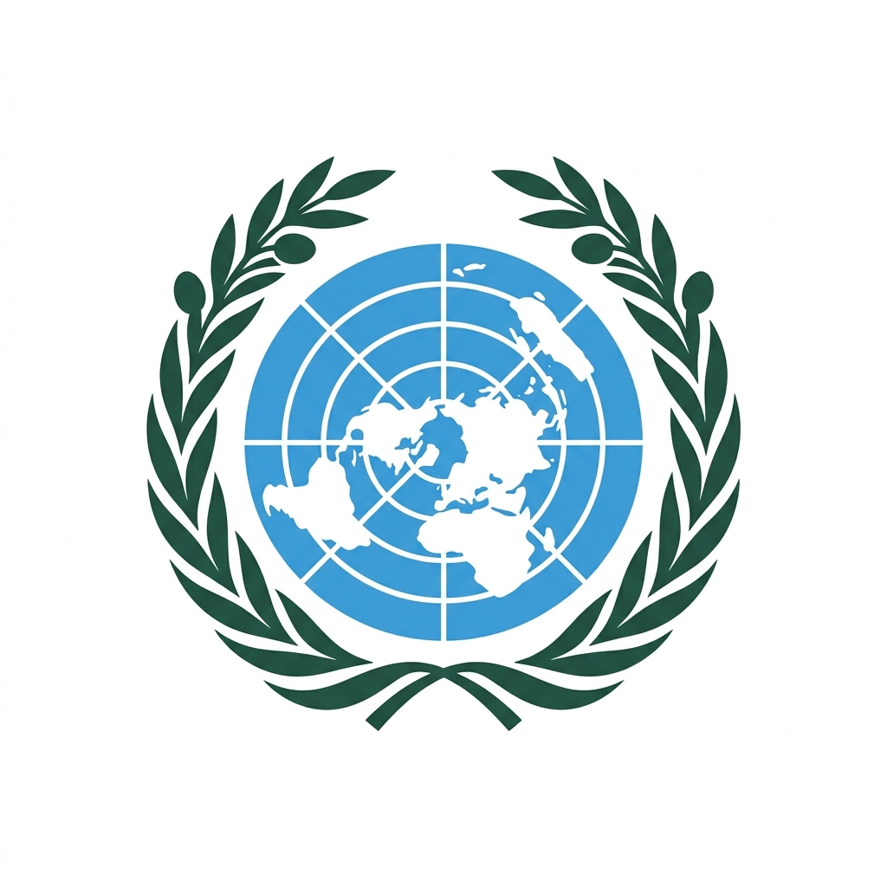

Vardaan Learning Institute
ICSE Class 10 History • Chapter Notes
🌐 vardaanlearning.com📞 9508841336Team Vardaan ❤️
Chapter 5: The United Nations

The United Nations (UN) is an international organization founded in 1945 after WWII to promote international peace, security, cooperation, and human rights. It replaced the failed League of Nations and is the world's largest international organization.
Key Facts
Founded: 24 October 1945 (celebrated as UN Day) | Headquarters: New York City, USA | Members: 193 member states | Official Languages: Arabic, Chinese, English, French, Russian, Spanish | Secretary-General: António Guterres (since 2017)
1. Formation of the United Nations
- Atlantic Charter (1941): US President Roosevelt and UK PM Churchill agreed on principles of freedom and self-determination — laid the groundwork for the UN.
- Dumbarton Oaks Conference (1944): USA, UK, USSR, and China drew up the proposed structure of the UN.
- Yalta Conference (February 1945): Roosevelt, Churchill, and Stalin agreed on the structure of the Security Council and the veto power.
- San Francisco Conference (April–June 1945): 50 nations drafted and signed the UN Charter on 26 June 1945.
- The UN officially came into existence on 24 October 1945 when the Charter was ratified by the five permanent Security Council members.
2. Objectives of the United Nations
- To maintain international peace and security — prevent wars and settle disputes peacefully.
- To develop friendly relations among nations based on the principle of equal rights and self-determination of peoples.
- To achieve international co-operation in solving international problems of an economic, social, cultural, or humanitarian character.
- To promote and encourage respect for human rights and fundamental freedoms for all without distinction as to race, sex, language, or religion.
- To be a centre for harmonizing the actions of nations in achieving these common goals.
3. Principal Organs of the UN
A. The General Assembly — Composition and Functions
Composition
The General Assembly consists of all 193 member states of the UN — every member nation is represented. Each member state has one equal vote regardless of its size, population, or military power. Sessions are held annually (September–December) in New York.
Functions of the General Assembly:
- The main deliberative (discussion) body of the UN — discusses and debates all important world issues.
- Approves the UN budget — each member contributes according to its ability to pay.
- Elects the non-permanent members of the Security Council (10 members, 2-year terms).
- Elects the judges of the International Court of Justice.
- Approves the admission of new member states.
- Passes resolutions on international issues — though these are not legally binding (only recommendations).
- On important questions, decisions require a two-thirds majority; on other questions, a simple majority.
B. The Security Council — Composition and Functions
Composition
The Security Council has 15 members:
• 5 Permanent Members (P5) — USA, United Kingdom, France, Russia, China. They hold their seats permanently and each has the Veto Power.
• 10 Non-Permanent Members — elected by the General Assembly for 2-year terms on a rotational basis, representing different geographic regions.
Important
Veto Power: Each of the 5 Permanent Members has the power to veto (block) any resolution of the Security Council. If even ONE permanent member votes against a substantive resolution, it cannot be passed — even if all 14 other members vote in favour. This makes the P5 extremely powerful within the UN system.
Functions of the Security Council:
- Primary responsibility for the maintenance of international peace and security.
- Investigates disputes and situations that may threaten international peace.
- Can impose economic sanctions on countries that violate international law.
- Can authorize military action (including peacekeeping operations — "Blue Helmets") against aggressors.
- Recommends new member states for admission to the General Assembly.
- Recommends the appointment of the Secretary-General.
- Decisions on substantive matters require 9 out of 15 votes, including all 5 permanent members (no veto against it).
C. The International Court of Justice (ICJ)
Key Facts
Also called: The World Court | Location: The Hague, Netherlands | Composition: 15 judges elected for 9-year terms by both the General Assembly and Security Council | No two judges may be nationals of the same country
Functions of the ICJ:
- Settles legal disputes between nations — only member states (not individuals) can bring cases.
- Gives advisory opinions on legal questions referred to it by the UN General Assembly or Security Council.
- Its decisions are legally binding — but the ICJ has no enforcement mechanism; it relies on the Security Council to enforce its judgments.
D. Other Principal Organs
- Secretariat: Headed by the Secretary-General (the UN's chief administrative officer). Currently António Guterres of Portugal (since 2017). Manages day-to-day operations of the UN.
- ECOSOC (Economic and Social Council): 54 members; coordinates economic, social, cultural, educational, and health work of the UN and its specialized agencies.
- Trusteeship Council: Supervised trust territories moving toward independence. Its work is now complete and it has suspended operations (1994).
4. Major Specialized Agencies of the UN
| Agency | Full Form | Headquarters | Key Functions |
|---|
| UNICEF |
United Nations Children's Fund |
New York, USA |
Child welfare, nutrition, immunization, education; protects children in conflict zones; provides humanitarian aid to children worldwide |
| WHO |
World Health Organization |
Geneva, Switzerland |
Global health leadership; disease prevention and control; vaccination programmes (eradicated smallpox, working to eradicate polio); responds to pandemics (COVID-19, Ebola) |
| UNESCO |
United Nations Educational, Scientific and Cultural Organization |
Paris, France |
Promotes education for all; preserves cultural heritage (World Heritage Sites); promotes science and cultural diversity; press freedom; literacy programmes |
| FAO |
Food and Agriculture Organization |
Rome, Italy |
Fighting world hunger; improving food security and agricultural productivity; food safety standards |
| ILO |
International Labour Organization |
Geneva, Switzerland |
Promotes workers' rights, fair employment, social protection, and decent work conditions worldwide |
| IMF |
International Monetary Fund |
Washington D.C., USA |
International monetary cooperation; financial stability; lends to countries in economic difficulty |
| IAEA |
International Atomic Energy Agency |
Vienna, Austria |
Promotes peaceful use of nuclear energy; conducts inspections to prevent nuclear weapons proliferation |
Memory Tip
HQ of the three major agencies (syllabus):
UNICEF = New York | WHO = Geneva | UNESCO = Paris
Remember: "Nice Weather in Paris" → N (New York) W (WHO/Geneva) P (Paris)
5. Universal Declaration of Human Rights (UDHR)
Meaning
Universal Declaration of Human Rights (UDHR):
The UDHR is a landmark document adopted by the UN General Assembly on 10 December 1948 (the date is now celebrated annually as Human Rights Day). It contains 30 articles that declare the fundamental rights and freedoms to which all human beings are entitled, regardless of race, nationality, sex, religion, or any other status. It was drafted under the chairmanship of Eleanor Roosevelt (USA).
Key rights declared: Right to life, liberty and security; freedom from torture; right to equality before the law; freedom of thought, conscience and religion; freedom of expression; right to education; right to work; right to participate in government.
Note: The UDHR is not legally binding — it is a moral declaration. However, it has inspired over 60 binding human rights treaties worldwide and is considered the "mother" of international human rights law.
6. Achievements and Limitations of the UN
Achievements
- Peacekeeping: UN Blue Helmets have been deployed in over 70 peacekeeping missions in conflict zones (Congo, Cyprus, Lebanon, etc.).
- Decolonization: Helped over 80 nations gain independence peacefully since 1945.
- UDHR (1948): Created the foundation for international human rights law.
- Humanitarian Aid: UNICEF, UNHCR, and WFP provide vital aid to millions of refugees and disaster victims.
- SDGs: 17 Sustainable Development Goals — a blueprint to achieve a better future by 2030.
- Disease eradication: WHO led the global eradication of smallpox (1980).
Limitations
- Abuse of Veto Power: P5 members block resolutions that threaten their national interests — e.g., USA vetoes resolutions on Israel; Russia vetoes on Syria.
- Failed to prevent wars: Korean War, Vietnam War, Gulf War, Iraq War, etc.
- Genocides not prevented: Rwanda (1994) — 8 lakh killed while UN stood by; Bosnia — Srebrenica massacre (1995).
- No standing army: Depends on voluntary contributions of troops from member states.
- Inequality: The P5's veto power gives five nations disproportionate control; the UN structure reflects the post-WWII world order, not today's reality.